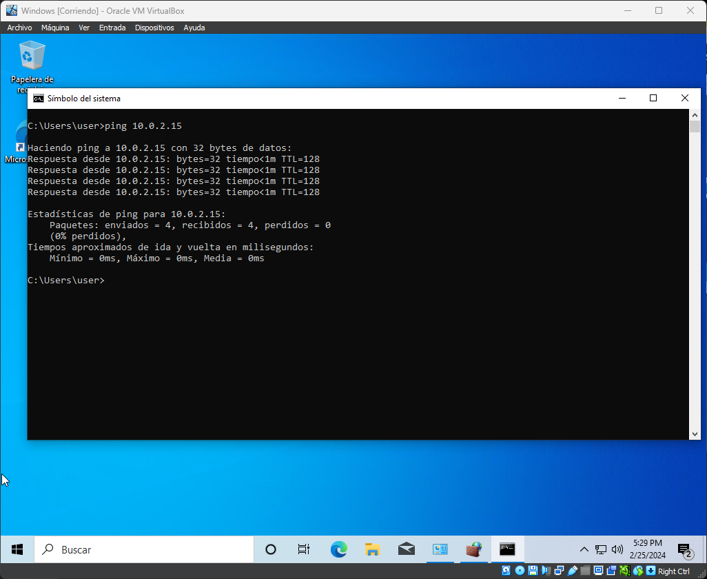

Enviar Paquetes entre sistemas
Abriremos la terminal de Windows estando dentro de la maquina virtual de Windows escribiendo en el buscador terminal. Una vez abierto escribiresmos el siguiente comando para que se compruebe si hay conectividad entre los sistemas utilizando la ip que nos devolvio el sistema operativo de Linux. Si de los paquetes enviados no se ha perdido ninguno significa que todo funciona correctamente.
ip 10.0.2.15
